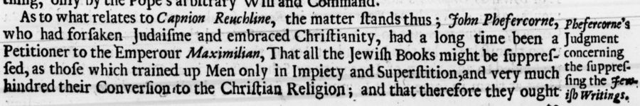
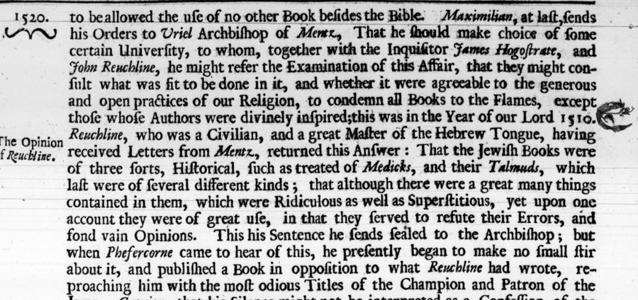

Pfefferkorn, Reuchlin and the Jewish books (Book II, pp. 29–30)
English: 1689, Book II, under the year 1520 (Sleidan tells the story as background to Luther), pp. 29–30, scan n47–n48. Long s modernised. Highlighted: the measure and Reuchlin’s answer.


As to what relates to Capnion Reuchline, the matter stands thus; John Phefercorne, who had forsaken Judaisme and embraced Christianity, had a long time been a Petitioner to the Emperour Maximilian, That all the Jewish Books might be suppressed, as those which trained up Men only in Impiety and Superstition, and very much hindred their Conversion to the Christian Religion; and that therefore they ought [p. 30] to be allowed the use of no other Book besides the Bible. Maximilian, at last, sends his Orders to Uriel Archbishop of Mentz, That he should make choice of some certain University, to whom, together with the Inquisitor James Hogostrate, and John Reuchline, he might refer the Examination of this Affair, that they might consult what was fit to be done in it, and whether it were agreeable to the generous and open practices of our Religion, to condemn all Books to the Flames, except those whose Authors were divinely inspired; this was in the Year of our Lord 1510. Reuchline, who was a Civilian, and a great Master of the Hebrew Tongue, having received Letters from Mentz, returned this Answer: That the Jewish Books were of three sorts, Historical, such as treated of Medicks, and their Talmuds, which last were of several different kinds; that although there were a great many things contained in them, which were Ridiculous as well as Superstitious, yet upon one account they were of great use, in that they served to refute their Errors, and fond vain Opinions. This his Sentence he sends sealed to the Archbishop; but when Phefercorne came to hear of this, he presently began to make no small stir about it, and published a Book in opposition to what Reuchline had wrote, reproaching him with the most odious Titles of the Champion and Patron of the Jews. …
The story goes on (OCR only): Hochstraten prosecuted Reuchlin before the Archbishop of Mainz; Reuchlin appealed to the Pope, who committed the case to the Bishop of Speyer; Cologne burned Reuchlin’s book in February 1514; Speyer acquitted him and condemned Hochstraten in costs; Paris, after a long consultation, condemned the book on 2 August of the same year, holding that “the Jewish Talmuds were justly censured by former Popes”; and the case went to Rome, where some cardinals, among them Adrian, favoured Reuchlin for his learning.
Lecky (vol. II, ch. V, text at note 19) gives the University of Paris “some hesitation” before it supported the inquisitor; Sleidan says it decided “after a long Consultation”, having been “cajoled” through the Bishop of Liège. Lecky says Reuchlin’s rejoinder to Pfefferkorn asserted “the philosophical and historical value of the Jewish literature”; Sleidan does not describe the rejoinder, and his summary of Reuchlin’s sealed opinion values the books chiefly as a means of refuting the Jews.
Further down the rabbit hole
Sources that Lecky cites in the notes next to the ones that cite this page.
- Sarpi, Historia dell’origine, forma, leggi ed uso dell’ufficio dell’InquisizioneA Venetian friar on how churchmen changed their tune about princes
- Llorente, Histoire critique de l’Inquisition d’EspagneHow many did the Spanish Inquisition burn? Its former secretary counts
- The Life of the Rev. Joseph Blanco WhiteSouthey explains the Whigs: Fox “is said to have died an unbeliever”
- An Homily against Disobedience and Wilful RebellionHell as the prison of rebels: the Church of England preaches obedience
- Aquinas, Summa theologiae, II-IIHeretics and forgers; the usurper’s subjects
- Ayala, De jure et officiis bellicisAnyone may kill a usurper, not a lawful prince


Backlinks
Every place in Rationalism in Europe that links to this page (generated automatically when the site is built).
- Chapter V: note 19